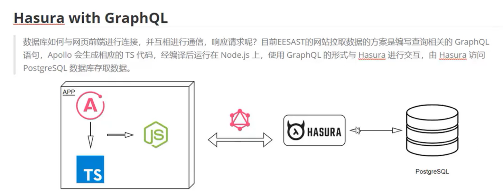

ryouの杂七杂八
网页查看源代码
view-source（ctrl+u）：是未经过js修饰的，和请求到的代码是一样的；
检查：是经过加载过部分js的代码，是展现给用户真正的源码；
Network标签页：preserve log（）、disable cache（防止本地取数据），Doc-->Response也是源码
H.264（MP4）编码原理
H.264解码：I帧（关键帧）、P帧、B帧，YUV色彩模型，差值算法
H.264编码使用I帧、P帧和B帧进行压缩,通过预测、残差编码和量化等步骤实现高效编码。视频文件的元数据如分辨率和时长存储在MOV盒子中,可通过部分下载获取。编码过程中采用YUV色彩模型和差值算法优化,最终使用哈夫曼编码进行压缩。
P2P下载
P2P下载是一种分布式下载技术,它通过对等网络连接多个用户,让用户之间共享下载任务,从而节省了服务器的带宽资源。
P2P下载的优点是节省了服务器的带宽资源,提高了下载速度,同时也减少了服务器的负载,提高了下载的可靠性。
P2P下载的缺点是用户的下载流量可能会受限,用户的下载质量也可能会受到影响。
P2P下载的实现方式有两种,一种是基于BitTorrent协议的P2P下载,另一种是基于HTTP协议的P2P下载。
其中BitTorrent也就是俗称的BT，是一种基于tracker服务器的点对点文件共享协议,它通过tracker服务器来管理文件分发,用户只需要下载BT客户端,并向tracker服务器注册自己的下载任务,tracker服务器会将用户的请求分配给其他用户,用户之间通过P2P网络进行文件共享。
BT的缺点：1.仍旧依赖于服务器；
2.滋养了某些吸血鬼行为，如迅雷，只下载不上传
应运而生：磁力链接、PT
磁力链接：每个用户变成tracker服务器，利用了DHT网络技术（找tracker） PT：在BT基础上增加规则，限制用户在特定圈子内下载，通过积分机制鼓励上传，避免吸血行为，确保上传下载数据平衡。
PT：在BT基础上增加规则，限制用户在特定圈子内下载，通过积分机制鼓励上传，避免吸血行为，确保上传下载数据平衡。
编程语言的分类
大体上，可以将程序设计语言可以分为两类：编译型语言和解释型语言。
编译型语言：很多传统的程序设计语言，例如Fortran、Ada、Pascal、C、C++和Java。
这类语言需要预先将我们写好的源代码(source code)转换成目标代码(object code)，这个过程被称作“编译”。
运行程序时，直接读取目标代码(object code)。由于编译后的目标代码(object code)非常接近计算机底层，因此执行效率很高，这是编译型语言的优点。
但是，由于编译型语言多半运作于底层，所处理的是字节、整数、浮点数或是其他机器层级的对象，往往实现一个简单的功能需要大量复杂的代码。例如，在C++里，就很难进行“将一个目录里所有的文件复制到另一个目录中”之类的简单操作。
解释型语言：也称为脚本语言，例如awk、Perl、Python、Ruby与Shell。
这类语言不需要预先编译，而是在运行程序时，解释器逐行读取源代码(source code)并执行。
使用脚本编程语言的好处是，它们多半运行在比编译型语言还高的层级，能够轻易处理文件与目录之类的对象；缺点是它们的效率通常不如编译型语言。
数学思维
Mathematics is the art of giving the same names to different things.
I+P+P^2+P^3+⋯=(I-P)^(-1)
数列？级数？向量？行列式？泰勒展开？算子代数！
这是一个链接
域名后缀小常识
.com：国际通用，商业组织
.net：国际通用，网络服务
.cn：中国域名，中国企业互联网
.org：国际域名，非盈利
.top：国际域名，可以用于任何组织和个人
了解VPN
Virtual Private Network
将专用网络延伸到公共网络上，使用户能够在共享或公共网络上发送和接收数据，就像他们的计算设备直接连接到专用网络上一样。
举例：两个物理距离很远的局域网互相传输信息，直接拉物理专线很费钱，用互联网（Internet）又不安全，而VPN安全可靠。
不同的分类：1.租用运营商————MPLS VPN;企业自建————IPSec VPN、L2TP VPN、SSL VPN等。
2.远程访问VPN（出差员工拨号接入）：L2TP VPN、SSL VPN；局域网之间（两个公司异地机构）：MPLS VPN、IPSec VPN等。
。。。。。。
Elastic Search(ES)
一个开源的搜索引擎，是数据和应用之间的中间层
倒排索引（Inverted Index）：分词+字典序 （term dictionary）+二分查找
但是term dictionary的数据量很大，不能放在内存里，放在磁盘里，而磁盘的查询速度很慢
优化磁盘搜索：目录树（trem Index）
Segment：最小的搜索单元，组成：Inverted Index + Term Index + Stored Fields（存放文档原始信息） + Doc Values(一种列式存储结构)
由于Segment一改全改，就不允许改，直接生成新的Segment,当Segment过多，就进行合并
于是我们得到了一个搜索库：Lucene
再通过一系列的优化，如分片等，最终形成一个高性能、高扩展性、高可用、支持持久化的分布式搜索引擎：ES
ps: 各个语言都有通过http对ES的接口
GiB和GB的区别
GiB：giga binary byte(缩写为gibibyte)，与MiB和KiB的换算为1024
GB：giga byte，与MB和KB的换算为1000，是十进制
1GB = 1000*1000*1000 byte = 1000*1000*1000/(1024*1024*1024) GiB = 0.9313225746154785GiB
所以，一个64GB的硬盘只有59.6GiB（因为是外存，没有严格要求）
cmd，powershell，shell，bash的区别
cmd：命令行解释器，是DOS系统的命令行环境，是DOS命令的集合，是Windows系统的默认命令行解释器。
powershell：微软推出的基于.NET Framework的命令行解释器，是Windows系统的默认命令行解释器。
shell：命令行接口，是一种命令行解释器，它是操作系统提供的用户接口，用户通过它可以与操作系统进行交互。
bash：Bourne Again Shell，是一种Unix shell和命令语言，是Linux系统的默认命令行解释器。
cmd指令集
>: 重定向，将命令的输出重定向到文件或其他命令
>>: 追加重定向，将命令的输出追加到文件末尾
|: 管道，将命令的输出作为另一个命令的输入
dir：显示当前目录下的文件和文件夹
mkdir：创建目录
rmdir：删除目录
copy：复制文件或文件夹
move：移动文件或文件夹
del：删除文件或文件夹
type：显示文件内容
set：设置环境变量
start：打开文件或程序
tasklist：显示当前运行的进程
ping：测试网络连接
netstat：显示网络连接信息
arp：显示网络连接信息
systeminfo：显示系统信息
shutdown：关闭或重启系统
windows（也有unix）的命令行工具
man: 显示命令的帮助信息, 系统指令一般在第二章，如：man 2 stat
winget: 微软推出的包管理器，可以安装windows应用
CODE: 打开vscode
notepad：打开notepad
$env:path：查看环境变量
ps: 可以查看进程
ctrl-c和ctrl-z的区别：ctrl-c是终止当前命令（sigint），ctrl-z是暂停(挂起)当前命令（sigtstp）, 直到收到sigcont信号才恢复，即fg命令（linux）
strace：查看系统调用, e.g: strace -e trace=write,read ps
stat: 查看文件信息
ssh
ssh: secure shell，是一种不对称加密的网络传输协议，用于在不安全的网络中进行安全的远程登录。
生成密钥：ssh-keygen -t rsa -b 4096 -C "ryou"
.pub：公钥，由本人公开，用于加密和验证签名，是给别人用的。当该用户发送文件时，用私钥签名，别人用他给的公钥解密，可以保证该信息是由他发送的。即数字签名。
git
git init：初始化一个git仓库
git clone --depth 1 xxx.git：克隆一个仓库，只下载最近一次提交
git status：查看仓库状态,确认有无没有track的子模块
git submodules add xxx.git：添加子模块
git submodules update --init --recursive：更新子模块
git config --global user.name "ryou"：设置用户名
git config --global user.email "xxx@xxx.xxx"：设置邮箱
git checkout -b xxx：创建分支
文件后缀
.d：汇编文件
.o：目标文件，编译生成的文件
.a：静态库文件，存放多个目标文件的集合
.so：动态库文件，运行时链接库
.dll：动态链接库，运行时链接库
.text：代码段，存放指令
.data：数据段，存放初始化的全局变量和静态变量
.bss：未初始化的全局变量和静态变量
.symtab：符号表，存放符号和符号的相关信息
.rel.text：重定位表，存放重定位信息
.rodata：只读数据段，存放只读数据
.elf: 可执行文件，包含了代码段、数据段、符号表、重定位表等
.bin：二进制文件，可以直接执行
gdb
退出：quit、ctrl+d
命令行 (mainly gcc)
objdump -d xxx.o：反汇编
objdump -d xxx.o > xxx.d：不打印直接写入文件
gdb xxx：调试程序
汇编：gcc -S test.cpp
-Og：优化等级，-O1最快，-O3最慢，-Os最小化代码大小
-o xxx：指定输出文件名
-lstdc++：链接c++标准库，-lxxx：链接xxx库，（g++会自动链接标准库）
-I.xxx：在当前目录查找任何include文件
-WL,--wrap,xxx：重命名函数，使得程序可以调用到原来的函数
-Wall：显示所有警告信息
gcc -o test test.c -lm：链接math.h库
gcc -o test test.c -I/usr/include/xxx：指定头文件目录
gcc -o test test.c -L/usr/lib/xxx：指定库文件目录
gcc -o test test.c -Wl,-rpath=/usr/lib/xxx：指定运行时链接目录
gcc -o test test.c -static：静态链接
gcc -o test test.c -shared：动态链接
全栈工具&历史
npm：node package manager，和node.js捆绑在一起的包管理器，（可不是普通的插件）
yarn：Facebook推出的包管理器，速度快，安全性高
commonJS：javaScript的模块化规范，nodeJs成熟的模块化就是在此基础上实现的
JS的发展：随着Ajxa的出现，JS开始爆火，但是出现了全局变量污染的严重问题
commonJS的出现不仅解决了全局变量污染、数据保护，还解决了模块之间依赖关系的维护
Jquery：一个轻量级的js库，可以简化DOM操作，提高开发效率
ES6：ECMAScript 6，是JavaScript的最新版本，引入了let、const、class、模板字符串、箭头函数、Promise等新特性
Babel：一个JavaScript编译器，可以将ES6代码编译成ES5代码，使得浏览器可以识别
Webpack：一个模块打包器，可以将模块按照依赖关系进行静态分析，然后将这些模块打包成一个文件
typescript：微软推出的JavaScript超集，可以编译成纯JavaScript，增加了类型系统，提高了代码的可维护性，type = 类型
简单来说：typescript（.ts）是增加类型检测的JavaScript
Hasura with GraphQL：一个开源的GraphQL API服务，可以快速搭建GraphQL API服务: 
GraphQL：一种相比较于古老的SQL更为直观的查询语言，其表示对象的结构类似于json
React：源于Facebook内部项目，用于快速构建用户界面的JS库
docker：基于go语言的云开源项目，主要是bulid、ship、run，通过src、环境、第三方依赖等打包成一个可运行的镜像，然后在任何地方依据镜像生成容器，之后就可以运行了
作用：避免提供源码但环境不同配置不同等兼容问题，轻松实现跨平台跨服务器的运行，简化了从开发、调试到生成的迁移问题
Linux
usr: Unix System Resource，系统资源，包含命令、工具、库、文档等
/bin: 系统命令，如ls、cat、mkdir等
/usr/bin: 二进制文件主要储存位置，大部分用户程序
/usr/local/bin: 本地命令, 由管理员安装的可执行文件
/sbin：
/lib：
usr/lib:
/etc: 系统配置文件, 从网络到身份验证服务
/home: 用户目录，每个用户都有一个自己的目录
/root: 管理员专属的目录
/var: 系统变量，如日志、缓存、打印机等
/run：运行时变量，系统启动后生成
/proc、/sys：虚拟文件系统，提供完整的系统可观察性，/proc提供系统内核信息，/sys提供系统硬件信息
编程思想
面向对象：Object-Oriented Programming，OOP，是一种编程范式，是一种抽象程度很高的编程方法，将对象作为程序的基本单元，通过封装、继承、多态等特性来实现代码的重用、灵活性和可扩展性。
KISS原则：Keep It Simple and Stupid，简单即是美德，KISS原则是指在设计软件时，应当尽量保持简单，而不追求过度的复杂性。
LIFO原则：Last In First Out，后进先出，是一种数据结构原则，它规定了数据容器中元素的顺序，先进入容器的元素，最后一个被删除。
文本流原则：Text Stream，文本流原则是指程序的输入输出都是以字符流的形式进行的，程序不直接操作磁盘文件，而是通过标准输入、输出、错误流进行输入输出。
开发
项目经理和产品经理：产品经理负责产品的需求分析、设计、规划、开发、测试、发布等工作，项目经理则负责项目的管理、协调、分配、监督等工作。
UI设计师：界面效果图
架构师：整体架构设计，技术选型
开发工程师：代码实现
测试工程师：编写测试用例，输出测试报告
运维工程师：软件环境搭建、项目上线
拓扑
拓扑: topology，意思是"形态、结构"，拓扑学是研究拓扑结构的学科，是数学的一个分支。
拓扑排序：Topological Sorting，是一种对有向图进行排序的方法，其目的是将图中所有的顶点排成一个线性序列，使得图中任意两个顶点之间都存在一条有向边。
连分数
最简连分数：圆周率、欧拉常数、根号2、
最简连分数表示：a=[a0;a1,a2,a3...]